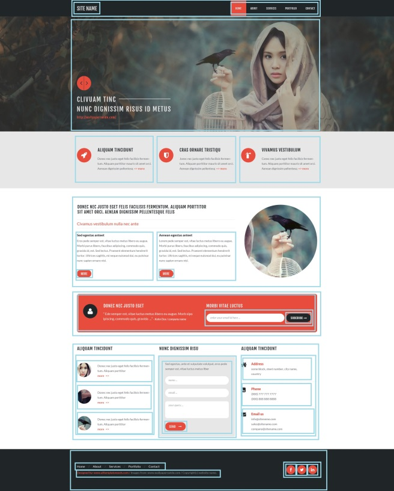

Workshop
Created by Vladimir Zhydal
WORKING with mockups
Splitting a mockup to components


Exporting a layer from a psd
(selection)
- Select the Move Tool (v)
- Select a layer as a target in dropdown
- Check auto select or use ctrl + click to select a required layer
Exporting a layer from a psd
(duplication)

- Right click on the required layer
- Select the duplicate layer menu point
- Duplicate layer in a new document
Exporting a layer from a psd
(modification)
- Image -> Trim
- Image -> Image Size
- Image -> Canvas Size
- Image -> Image Rotation
Exporting a layer from a psd
(saving)
-
File -> Save for Web & Devices…
- jpg or png?
- quality
- progressive
Getting a vector smart object from a psd
Double clicking the vector smart object opens it in Illustrator
Icons and Fonts
@font-faces
@font-face {
font-family: MyHelvetica;
src: local("Helvetica Neue Bold"),
local("HelveticaNeue-Bold"),
url(MgOpenModernaBold.ttf);
font-weight: bold;
}
Web Fonts
creating an icon font
based on icomoon app
https://icomoon.io/styling of icons
Creating a markup
reset vs. normalize
reset
- Removes all built-in browser styling.
- Standard elements have no decoration at all.
normalize
- Makes built-in browser styling consistent across browsers.
- Standard elements appear in a consistent way across browsers.
grids and layout
- Grids: base points
- Responsive grids
header
- display table !== <table>
- vertical alignment
primary-navigation, secondary navigation, social-links
- floating vs. display: inline-block vs. table-cell
- floating and clear-fix
- pseudo-elements: before and after
Slider
- use inputs for nojs
- hiding an input and styling related label
- transitions
service-item and subscription-form
- floating for 2 columns layout with a static column
- tables and static column layout
Guidelines and code style
Our Guidelines
https://wiki.itechart-group.com/pages/viewpage.action?pageId=12779733CssComb
Makes your code beautiful
http://csscomb.com/